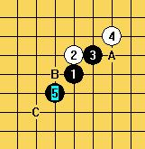
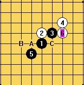
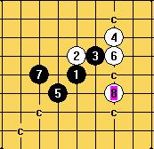
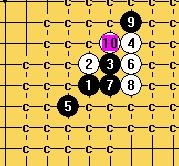
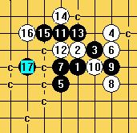
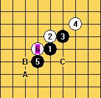
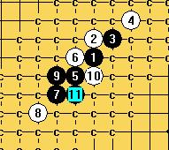
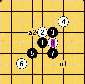

从花月开局中体会棋理及战略战术
#1 从花月开局中体会棋理及战略战术作者：邓飞 发表时间：2009-12-26 20:22:02
花月,浦月不仅是五子棋的基础功夫,而且对日后个人技术的发展极有帮助.可以说,任何其他的开局最后都是利用花月、浦月中的基本胜形而取胜的,如果一个棋手真正学会了,学懂了,学透了这两种开局,并在任何情况下对白方的任一应点都能取胜的话,这个棋手就已经具备了相当高的水平. 学棋,要活学,要掌握其精髓,实质,而不是单纯记谱或背诵定式,这一点是任何要成为棋手的人都必须牢记的.
定式是个好东西，是前辈们经验的一种积累，是初学者的领航灯,了解定式是必要的，但是要做到知其然，更知其所以然，从中领会到棋理的奥迷与技巧，活学活用，举一反三，这样才算是达到了学习定式的真正目地。
学习花月开局重点是在学习黑方的进攻方式、做棋方法、棋理、战略战术，如何保持先手优势，进行彻底的进攻直到取胜！
下面我们来看黑5留下一打点后，白6在A、B、C三点，黑7的应对

一，白6防在A点时
有些同学提出了黑7分别可选下在A、B、C三点

（1）先看看假如像有的同学提出的下在B点后，会是什么样的一种情形:
如果黑7选在B点，乍看上去，是一手拓展棋型的好棋，好像黑棋的连接与进攻的路线非常多，但对白棋没有牵制作用，白棋最后连攻取得胜利。

同样，当黑7选在C点，对白棋仍然没有牵制作用，白棋在左上方连攻取得胜利。

这里要特别强调做棋的2个大原则：1、连接 2、牵制
简单做棋的方法：1、子力连接 2、等招 3、做杀
等招：后中先的下法，等招 的特点：反3，反4，反4、3牵制对方，从而获得机会抢先。
在这里当黑7选择下A点时，即便白棋有反三，黑棋有等招再反回来，从而保持先手优势，进行彻底的进攻直到取胜！

二，当白6防在B点时，黑7先A点冲四后再B点，或是下在C点都是可行的

黑11做棋，摆出一个剑阵，依据着做棋方法：1、子力连接 2、等招 （即不管白棋的一个活二往哪个方向攻击，都有反3等着）

三，当白6防在C点时，黑7在这里做棋，选择了子力最好的连接方式，一子通三路

白8防守后，黑9选择a1、a2两种下法都可行，原则上当黑9若选择下在a2(即X的一种棋形）与白棋纠缠的比较紧，蠃法稍微复杂一些，通常进攻方向的选择，最好选在进攻的空间比较广阔，对方的防守力量比较薄弱的地方。
［ 逆刃 于 2009-12-26 20:48:53 时奖励此帖[金币加 20 威望加1］
［ 河北穿云 于 2011-9-30 0:04:48 时花20金币送鲜花一朵］
［ 河北穿云 于 2011-9-30 0:04:54 时花20金币送鲜花一朵］
［ 河北穿云 于 2011-9-30 0:05:00 时花20金币送鲜花一朵］
［ 河北穿云 于 2011-9-30 0:05:04 时花20金币送鲜花一朵］
［ 河北穿云 于 2011-9-30 0:05:09 时花20金币送鲜花一朵］
#2 Re:从花月开局中体会棋理及战略战术作者：雅匪 发表时间：2009-12-26 21:36:42
挺实用的工具文#3 Re:从花月开局中体会棋理及战略战术作者：小帮帮 发表时间：2009-12-26 23:51:46
嗯，分析得不错。
#4 Re:从花月开局中体会棋理及战略战术作者：河北穿云 发表时间：2011-9-30 0:05:29
真不该沉···#5 Re:从花月开局中体会棋理及战略战术作者：五子酷 发表时间：2011-9-30 8:24:43
雪飞老师分析得更透彻。